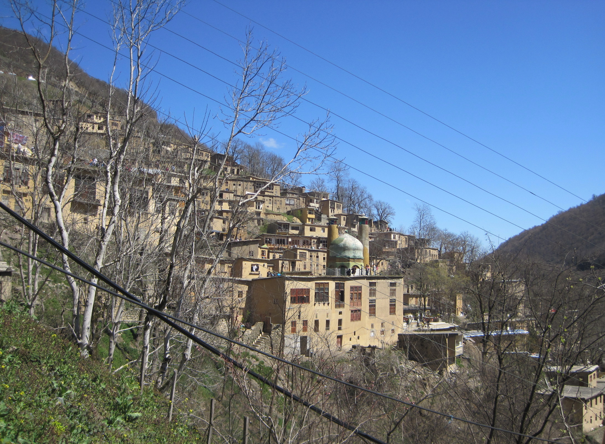
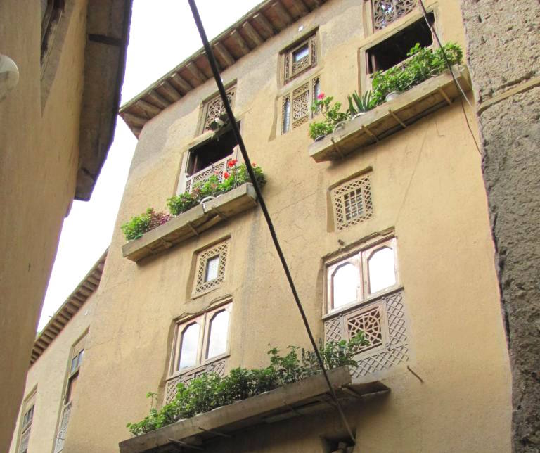
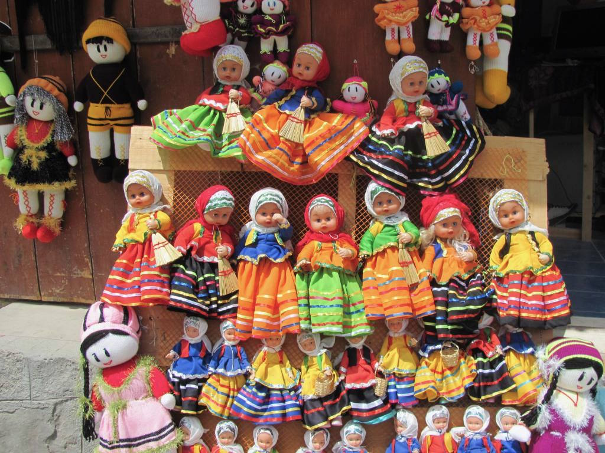
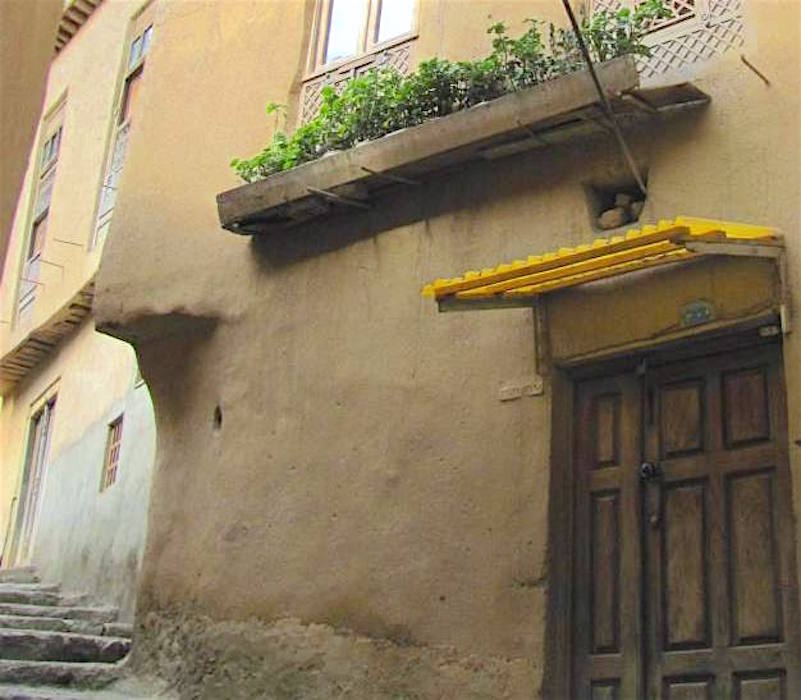
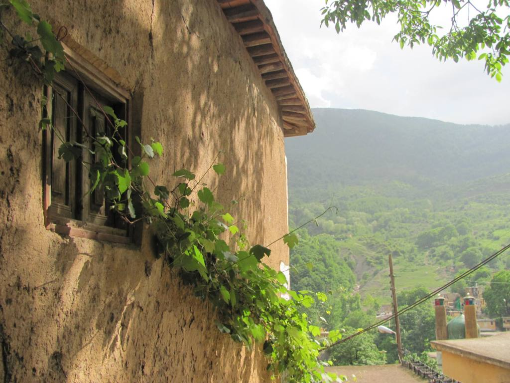

Masuleh is known as one of Iran’s most beautiful villages with its attractive nature and unique architecture. This ancient village is situated south of the Caspian Sea in the province of Gilan and was founded in the 10th century A.D. It has a population of around 550 inhabitants.
 The spectacular architecture of Masuleh: Yard of the above building is the roof of the below buildingThe unique thing about this adorable village is that the earth-coloured houses are built on such a steep mountainside that the roof of one, forms the pathway for the next. The buildings have been built into the mountain and are interconnected. Courtyards and roofs both serve as pedestrian areas, similar to streets. Motor vehicles are banned in this village due to its unique organic layout and steep stairs.
 Beautifully decorated earth-coloured house.There is a river passing through the village called Masuleh-Rood-Khan with a beautiful waterfall located just 200 meters away from the village. It's cut-off by snow during the winter months.
Masuleh’s market consists of different trades and local shops but what is most eye-catching are stands selling colourful handmade knitted dolls in different sizes which is difficult not to buy one and take home.
 Young and old selling colourful dreamlike dolls in the alleys of Masuleh.If you have climbed all the way to the top of the village, now it’s time to take a rest in one of the traditional coffee shops in Masuleh which serves you with tea and tasty local pastry called kolouche.
 Steep and narrow streets of Masuleh.This beautiful combination of history and traditions, manners and customs, handicrafts, and many natural and historical sites, is the host of thousands of travellers every year. As stated by Sohrab Sepehri, the great modern poet of Iran, "We came here to write, but Masuleh can’t be written, Masuleh should be seen."
Climate
Masuleh village is located high on a densely forested mountainside about 60 kilometres inland from the Caspian Sea. The climate of Masuleh village is different from much of Iran due to its location. It is a blend of moderate mountainous weather conditions and the humid coastal climate. The tourists that visit this region are enchanted with its mild and fresh weather. Masuleh is blessed with an abundance annual rainfall. This, in turn, has spawned dense forests and gushing rivers in the area. Fog is the predominant weather feature of Masuleh.
 Village of Masuleh is symbol of the breath-taking beauty and the ever-green nature of Gilan Province.How to reach
Masuleh is approximately 60 km southwest of Rasht and 32 km west of Fuman in Gilan province. The distance from Tehran to Masuleh is about 377 km.
By plane: The nearest airport is located in the city of Rasht, 60 km from Masuleh.
By car: It takes about 5 hours of driving by car to reach Masuleh from Tehran. The Tehran-Rasht highway is one the most beautiful roads in Iran. Evergreen forests, meadows and mountains can be observed all the way to the destination. If you decide to go by car, it is recommended that you stay one night in Rasht or Fuman.
By bus: There are direct buses from Tehran (Beihaghi Terminal) to Rasht and Fuman. From these two cities, you can either take private taxis or use public transport such as minibuses.